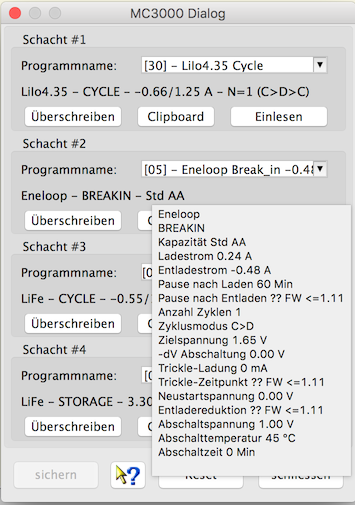
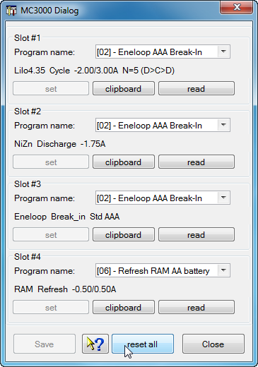

The device dialog enables to configure temporary programs which needs to be available and configured using the device itself. It is possible to create a backup copy of the device programs which can be used for a case were a firmware update cleaned all up. Most of the widgets in this dialog have tool tips to help understanding the functionality.

To describe the programs to be stored up to 35 characters can be used. The main characteristics are already displayed, a more detailed list will occur while hovering the mouse pointer above this field. The detailed list can be copied into the clipboard to create a more detailed description for personal use.

Hint: The reset all button reload all programs which are red while opening this dialog. If required use the set button to write it to the slot to be used as temporary program. This temporary programs get displayed according device configuration only with inserted cell. The program parameters can not be checked using the device itself, it must be done using this dialog. The user is responsible to place the matching batteries into the slot before starting the program and data capturing. While the program is executing the device showing up the parameters as usual.